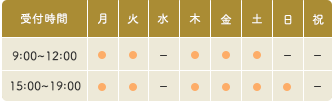

診療案内
≪提携医院≫
●診療対応 （夜間等）
日本大学病院ＡＮＭＣ
日本動物高度医療センター
川崎市獣医師会夜間診療センター
●会員
川崎市獣医師会
生き物文化史学会
希少動物人工授精繁殖研究会
日本動物福祉協会
日本家禽協会

休診日：水曜日、日曜午前、祝日
| 対象 | 犬・猫・鳥・うさぎ・ハムスター・ フェレット・その他小動物 |
|---|
| 診療内容 | 動物一般診療、健康診断、 外科手術、 予防接種、 その他 |
|---|
＊急患随時受付可能
＊病院まで来れない場合自宅往診いたします。
クリニックについて
平間獣医科クオンクリニックは、神奈川県川崎市中原区上平間の動物病院です。
平間獣医科３代に渡り継承された治療と敬愛精神をモットーに、再び平間獣医科クオンクリニックとして再開院しました。
犬、猫に加え、うさぎ、フェレット、鳥などの診療を行っております。動物ドックやトリミング、ペットホテルもございます。
みなさまの「大切なご家族」としてお迎えし、気軽にご相談いただける親しみやすく快適な病院を目指します。

アクセスについて
- 所在地
- 〒211-0013
神奈川県川崎市上平間1262
- 電話番号
- 044-223-6363
- 電車でお越しの方
- JR南武線 鹿島田駅 徒歩15分
- バスでお越しの方
- 川崎市営バス「上平間」バス停より徒歩3分